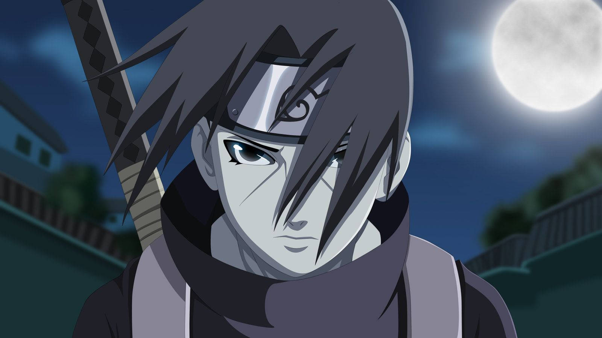

I am Itachi Uchiha
Itachi Uchiha was a shinobi of Konohagakure's Uchiha clan who served as an Anbu Captain.
More Info

Itachi Uchiha was a shinobi of Konohagakure's Uchiha clan who served as an Anbu Captain.
More InfoItachi could summon crows, which he would typically call forth in flocks to swarm opponents and distract them.
The Sharingan grants the wielder two broad abilities: the "Eye of Insight" and the "Eye of Hypnotism".
Susanoo is a gigantic, humanoid avatar made of the user's chakra which surrounds them and fights on their behalf.
Amaterasu is a Mangekyō Sharingan, and the highest level of Fire Release. Said to represent the "Material World and Light"